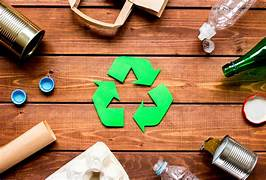

El reciclaje es un proceso clave para la conservación del medio ambiente, que permite transformar materiales desechados en nuevos productos, reduciendo así la necesidad de extraer recursos naturales, minimizando la cantidad de residuos generados y contribuyendo a la disminución de la contaminación. Sin embargo, la falta de reciclaje tiene consecuencias graves para el planeta. Aquí te doy una visión general sobre el tema, sus consecuencias y algunas propuestas para mejorar la situación.
¿Qué es el reciclaje?
El reciclaje es el proceso de recolectar, clasificar y procesar materiales desechados para convertirlos en nuevos productos. Los materiales más comunes reciclados incluyen el papel, plástico, vidrio y metales. El objetivo es reducir la cantidad de residuos sólidos, disminuir la contaminación ambiental, ahorrar energía y recursos naturales, y contribuir a la economía circular.
Consecuencias de no llevar a cabo el reciclaje
Si el reciclaje no se lleva a cabo correctamente, las consecuencias pueden ser graves:
1. Aumento de los residuos sólidos:
La falta de reciclaje lleva a que grandes cantidades de materiales terminen en vertederos o sean incinerados,
lo que incrementa la cantidad de desechos sólidos. Los vertederos pueden ocupar vastas extensiones de tierra
y generan contaminación en el aire, agua y suelo debido a la descomposición de los residuos y la emisión de
gases tóxicos.
2. Contaminación ambiental:
Muchos materiales reciclables, como plásticos y metales, no se descomponen de manera natural y pueden
permanecer en el ambiente durante siglos. Esto afecta a la fauna y flora, especialmente en los océanos,
donde los plásticos terminan afectando a la vida marina. Además, la incineración de residuos puede liberar
sustancias tóxicas como dioxinas y furanos.
3. Desperdicio de recursos naturales:
Al no reciclar, continuamos extrayendo recursos naturales para producir nuevos productos.
Esto no solo es más costoso, sino que también agota los recursos no renovables como minerales,
petróleo y madera.
4. Mayor huella de carbono:
El reciclaje reduce la necesidad de fabricar productos desde cero, lo que generalmente consume mucha energía
y produce más emisiones de gases de efecto invernadero. Al no reciclar, el proceso de producción de nuevos
productos genera mayores emisiones de CO2.
5. Impacto en la biodiversidad:
La acumulación de desechos, en especial los plásticos, puede alterar ecosistemas y amenazar la vida
de diferentes especies. Los animales pueden ingerir residuos plásticos, lo que puede ser mortal para ellos.
También puede afectar a los ecosistemas marinos y terrestres.

Propuestas para mejorar el reciclaje
1. Educación y sensibilización:
Es fundamental concienciar a la población sobre la importancia del reciclaje. Esto incluye informar sobre
qué materiales se pueden reciclar, cómo deben ser clasificados y qué impacto tiene el reciclaje en el medio
ambiente. Las campañas de educación en escuelas, medios de comunicación y redes sociales pueden ayudar mucho.
2. Mejorar la infraestructura de reciclaje:
Muchas veces, el reciclaje no se lleva a cabo debido a la falta de infraestructura adecuada.
Los gobiernos y las empresas deben invertir en la creación de centros de reciclaje, la implementación
de puntos de recolección accesibles y el desarrollo de tecnologías para procesar materiales reciclables
de manera eficiente.
3. Fomentar la economía circular:
Las políticas que promuevan la economía circular, donde los productos y materiales se reutilizan constantemente,
son esenciales. Las empresas deben diseñar productos con materiales reciclables y duraderos, y los consumidores
deben elegir productos reciclados o reutilizables siempre que sea posible.
4. Incentivos para la participación ciudadana:
Se pueden implementar sistemas de incentivos, como recompensas por reciclar, descuentos por entregar materiales
reciclables, o programas de "pago por reciclaje". Esto puede motivar a más personas a involucrarse activamente
en el reciclaje.
5. Legislación y regulaciones más estrictas:
Los gobiernos pueden establecer normativas más estrictas sobre la producción y el manejo de residuos,
como la obligación de las empresas de reducir los empaques plásticos o de aumentar el porcentaje de
materiales reciclados en los productos. También se deben sancionar las malas prácticas en la gestión
de residuos.
6. Investigación e innovación tecnológica:
Es importante fomentar la investigación en nuevas tecnologías que faciliten el reciclaje y
aumenten su eficiencia. Por ejemplo, mejorar las técnicas de separación de materiales, o crear productos
que sean completamente reciclables sin perder calidad.

¿Qué podemos hacer al respecto?
Todos podemos contribuir al reciclaje y a la mejora del medio ambiente con acciones simples en nuestra vida diaria:
1. Separar los residuos:
Asegúrate de separar los materiales reciclables de los no reciclables en tu hogar. Esto incluye papel,
cartón, plástico, vidrio y metales. Usar contenedores diferenciados en tu hogar facilita el trabajo
de reciclaje.
2. Reducir el consumo de plásticos de un solo uso:
Evita el uso de plásticos de un solo uso, como botellas, bolsas y utensilios. Opta por alternativas
reutilizables, como botellas de acero inoxidable, bolsas de tela y productos duraderos.
3. Comprar productos reciclados:
Siempre que sea posible, compra productos fabricados a partir de materiales reciclados.
Esto apoya la demanda de materiales reciclables y fomenta la economía circular.
4. Informar y educar a otros:
Habla sobre el reciclaje con amigos y familiares, comparte información y hazles ver la importancia
de esta práctica. La educación y la concientización colectiva son clave.
5. Participar en programas comunitarios:
Únete a programas locales de reciclaje o limpieza de espacios públicos. Muchas ciudades tienen iniciativas
comunitarias que facilitan el reciclaje y promueven la protección del medio ambiente.
6. Reducir el consumo y fomentar la reutilización:
Trata de consumir de manera responsable. Comprar productos de calidad y duraderos,
reparar en lugar de desechar, y reutilizar materiales siempre que sea posible, son prácticas que
ayudan a reducir la cantidad de residuos.
Conclusión
El reciclaje es una de las formas más efectivas para proteger nuestro planeta, reducir la contaminación y fomentar un uso más responsable de los recursos. Si todos adoptamos prácticas de reciclaje más sostenibles y apoyamos políticas y tecnologías que faciliten este proceso, podemos contribuir a la preservación del medio ambiente para las futuras generaciones.